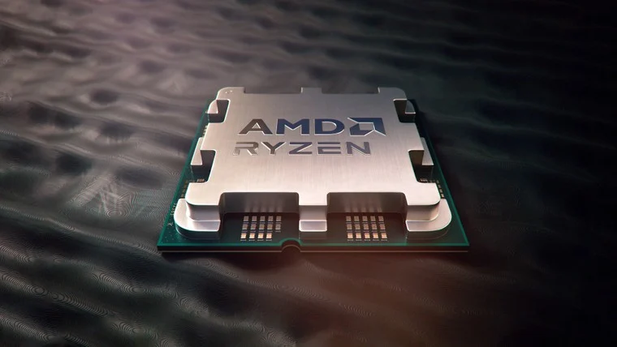

Imbatível: AMD deve entregar desempenho surpreendente com o Ryzen 7 9800X3D
Postado 04 outubro 2024

O aguardado Ryzen 7 9800X3D deve realmente ser supreendente. Diversos rumores
apontam que a primeira opção da AMD da série Ryzen 9000 com a tecnologia 3D V-Cache será mais um acerto
da companhia em relação a CPUs que entregam um excelente desempenho em jogos.
A AMD deve adotar uma comunicação enfática em relação a esse destaque da
performance. Segundo o material de divulgação do processador, vazado pelo Moore’s Law is Dead, a
companhia trabalhará o slogan “This legend is unbeatable” (“Esta lenda é imbatível”, em tradução livre).
Vazamentos e rumores anteriores sugeriam que esse novo chip proporcionará um
aumento significativo no desempenho dos jogos graças às mudanças na capacidade e no layout do cache do
3D V-Cache, possivelmente o uso desse tipo de memória no nos dois CCDs (Chiplets) do processador.
Agora, com o novo vazamento pelo Moore’s Law is Dead, a expectativa é que o
processador tenha um clock mais elevado em comparação ao AMD Ryzen 7 78000X3D.
Em relação ao lançamento, a expectativa é que a AMD faça o anúncio desse chip
no final de outubro.
Voltar